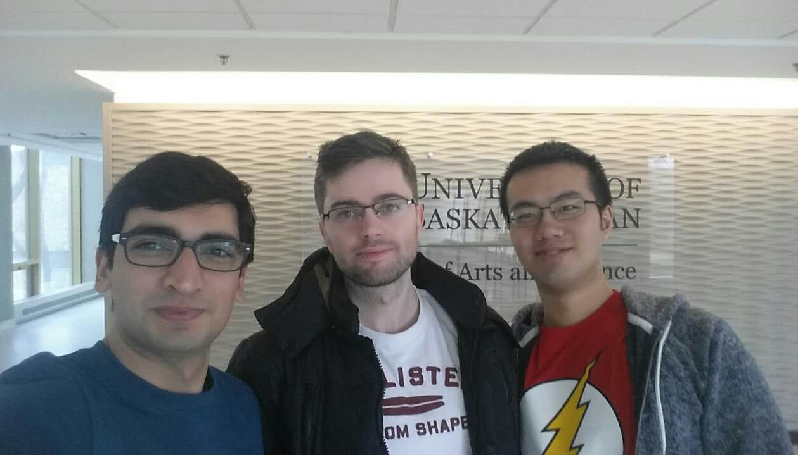
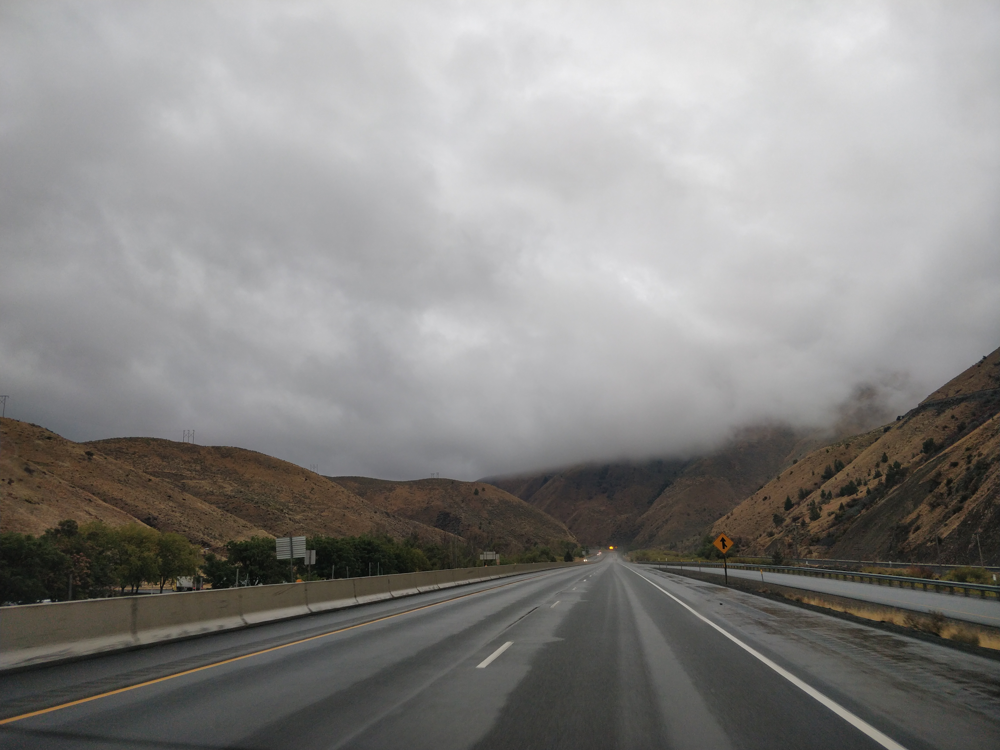
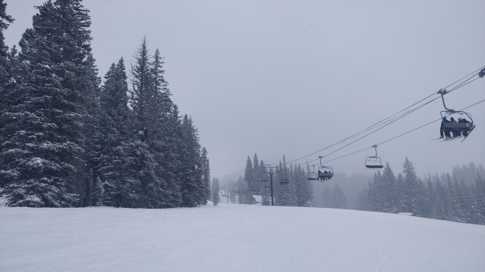
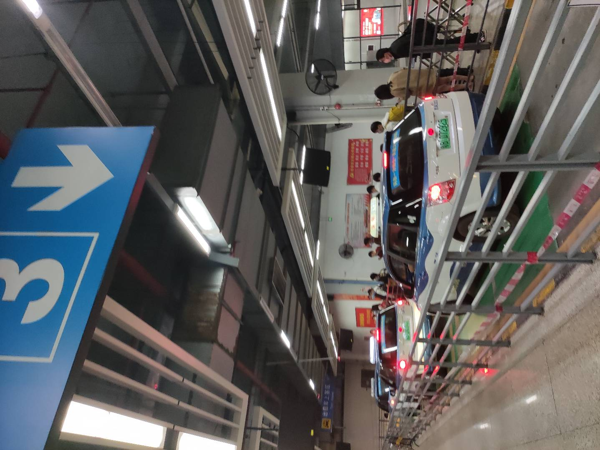
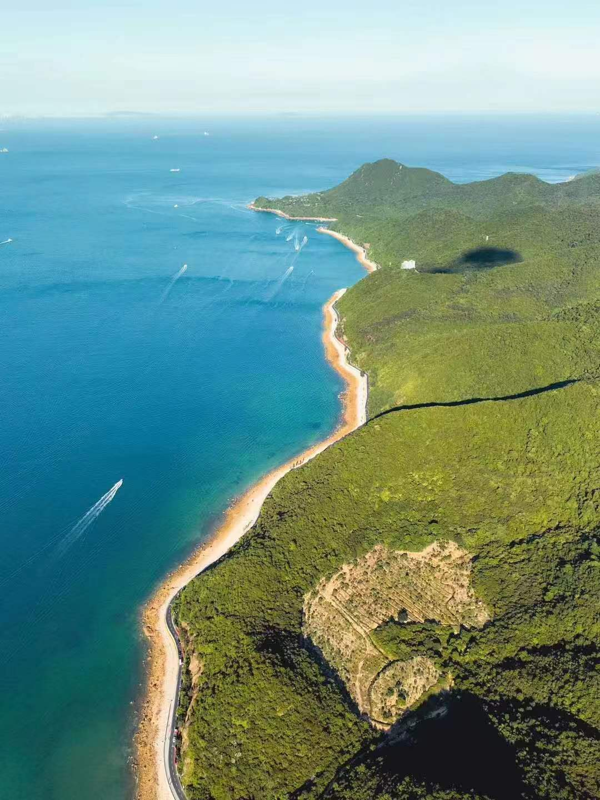
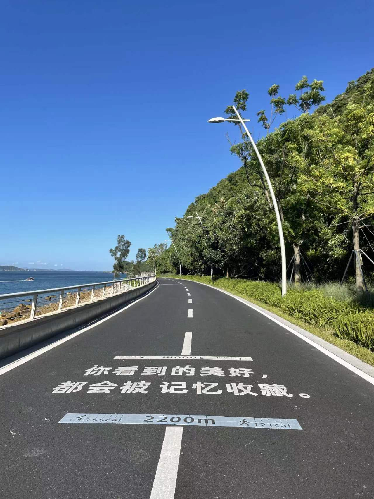
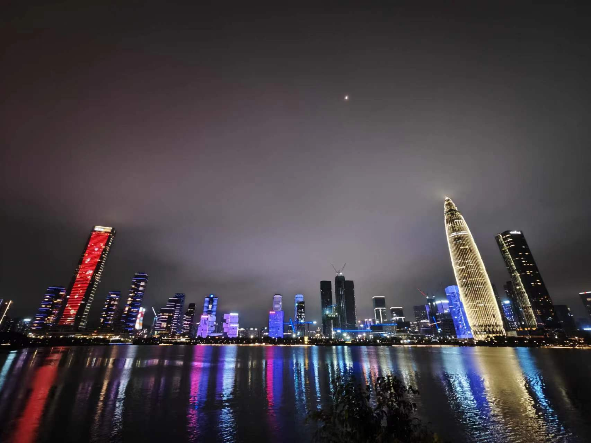

中外见闻随想录
从2015年秋天第一次出国，到2019年夏天回国，在北美大陆兜兜转转近四年。直到今年夏天，杭州半年，鹏城三年半，也刚好是回国四年了。前段时间去换公司口令卡。刚拿到的时候在想这里居然有一个过期日期，觉得应该是不会等到换卡的时候，没想到一晃已经工作三年了。望着工卡上几乎快要褪掉的颜色，想想也该给这个比较对称的时间点一些交代。
来自北美大陆的印记
前几天看到了一段很治愈也很致郁的话，节选如下：
宇宙的真理是熵增，而熵增定律告诉我们，恒星会熄灭，黑洞会消散，生命最终会奔赴死亡，这个结论听起来让人绝望、悲观。但三体的作者刘慈欣也曾说过与之对应的一句话：“世界末日也好，宇宙末日也好，我不认为这些东西是悲观的，因为必然会到来的东西，肯定不是悲观的”。道理很简单，人不应当与必然发生的事情相忤逆，而在所谓的终点到来之前，你永远还有把握好当下的机会。这也对应了一个人最大的成功便是接受了不能改变的，改变了能够改变的事情。
如果曾经的人没来得及道别，那就和尚在的每位亲人好好道别；如果觉得过往的经历留有悔恨，那就从今天起拿出勇气选择每个让自己无悔的答案。过往的片段固然难忘，但沉沦过去会让人驻足不前，你的将来同样可以拥有更多值得收藏一生的回忆。
在此之前，你大可不必为时间的过快流逝而感到苦恼，因为这种从自身出发的主观感知并非全然无法改变。我并不认同电影中所说的那般人生长短只是年龄数字上的简单叠加。如同手机相册中，系统会不时提醒删除重复的图片；视频片段里，算法会用帧间压缩的手段降低整体的空间开销。我们大脑也是如此，面对日复一日的生活，回忆总会不自觉省去几近相似的片段, 这是我们感到时间一年比一年更快的原因。大概是依靠惯性活了太久，差点忘了人生始终掌控自己手中，那些想见的人，想看的风景，童年的愿望，现在仍有机会实现。
也许你会觉得当下的生活难以逃避，的确如此，但这也并不应成为继续沉沦于重复生活的借口, 毕竟，苏格拉底早在千年之前就已说过-未经审视的人生不值得过。
如果觉得目标很远，那就从制定一次简单的计划开始；
如果觉得没有时间，那就重新评估当下生活的每一个环节；
而这其中所有的努力，都指向同一个目标：你应该去过一场值得而无悔的人生。
说了这么多，总之，希望题主能够拥有面对人生无常的勇气并早日重拾对于美好明天的确信。嗯，相信你可以，与你共勉。最令我触动的是这么一段“……面对日复一日的生活，回忆总会不自觉省去几近相似的片段，这是我们感到时间一年比一年更快的原因”，而解决的办法也很简单，“那些想见的人，想看的风景，童年的愿望，现在仍有机会实现。”
我现在已经很难回忆过去的三年是怎么度过的了。时间上的衡量似乎只有工作进度，然而工作进度也并不是全部由我掌握的。作为打螺丝的能保质保量在ddl之前交付标准件是基本的要求。
在人生最黄金的年纪在加拿大荒凉的平原上呆了三年，又在落基山脚下呆了一年，这四年的时间在自己身上留下了很深的烙印。其实有过无数次设想这几年如果是在国内找个学校读研究生，现在的我会身在何方。也许遇到了美好的校园恋情然后就定居在了北京上海，也许因为硕士学校的平台更高我现在正在美国的名校读博士（算来跟我一起读硕士的同学基本也都毕业各奔东西了，从数据点来看大家都登上了更高的台阶，由衷恭喜他们）。但是我们都知道不应该美化没有走过的路，就像新冠元年的时候我还被封在家里没法去上班，母上说你现在要是在美国我会担心得要死的，同事说你说不定会死在加拿大（嗯以加拿大的医疗系统的效率这可能性的确不小），所以never say never。
友人给我算过卦，说我过去的几年驿马星高照，颇多奔波。结合数据来看所言非虚：前日打开航旅纵横，看到自己飞过的旅程数大于90%的平台用户。经济舱飞越洋航线是相当折磨的。我在浦东飞温哥华的时候隔壁座有一大哥是飞多伦多，我好奇他为什么不浦东直飞，大哥说飞温哥华是我的极限了，中间不转机歇会命要少半条。所以经常出差满世界飞的工作可能没有大多数人想象的那么酷。所幸彼时年少，上了飞机灌一瓶航司提供的塑料瓶装的劣质红酒能酣然入睡，中间除了吃就是睡，下了飞机再睡一个大觉就能把时差倒过来，感慨一下年轻真好。
就像大数学家W. Osgood在美国工作的时候效仿Klein保留了很多在哥廷根的习惯，毕竟哥廷根之于Osgood影响很大（这则有关Osgood轶事来自于[1]），我在回国以后也保留了很多留学时期的习惯和思考、生活方式，只要不妨碍我融入国内同事朋友的圈子，我都会保留，试列举若干。
You are on your own
在国外学习生活和国内显著的不同是所有事情都要自己来。小到交学费，开银行账户，办ID，买车险、医保，料理一日三餐，大到办签证，租房，报税，所有事情都要自己亲历亲为，非常“简单直接的” you are on your own. 这里列举的问题有些是身在国内不会出现的问题，有些是有父母、辅导员、师兄师姐手把手指导。但是在国外，首先是没有师兄师姐（我是我们那届计算机系硕士生唯一的中国人，我上一届没有中国人，刚落地的时候一位同院系的人都不认识），其次自己不知道有哪些问题需要解决，最后是隔着语言文化的鸿沟，办业务的速度会有比较大的障碍。我自认为在国人群体英文算比较好的那一茬（雅思口语裸考7.5分），在政府机关办事的时候还是要反复说Excuse me来确认。
20岁的时候就被丢进了什么事情都要亲历亲为的异国他乡，这让我养成了一个习惯就是遇到问题疯狂查资料和官方网站。印象最深的是最后一次在加拿大申报个人所得税的时候我人已经在美国了，当时就想有没有一些税收的优惠。曾经试图去找Turbotax Canada人工服务来帮我报税。毕竟跨境报税我又是一个第三国人，这种情况确实不太推荐自己来做。就算花一两百刀我也能接受，别把我的征信弄黑了就行。没想到人家一听我人在美国直接说这个我们做不了。让我很头大……然后我就去加拿大税务局的网站翻报税指南，对着里面冗长的法律条文一条条抠，反复确认了好多遍发现自己似乎可以退税，还能退蛮多一笔，就照着做了，最后还真收到了小2K刀的退税。其实税务局那个报税指南厚确实厚，不过反正咱也看得懂英语，硬着头皮也能看，而且人家已经一条条给写好了，哪一行要怎么填都写得清清楚楚，只要你肯去认真读没有说搞不定的。
养成了直接考据的习惯到后面越来越上瘾，以至于后面所有于政府打交道的事情我都是直接去官网查条例原文，有不懂的直接打电话去问。当然这也跟当时的身份很简单以及没有什么资产有关。像报税这种事情推荐工作了以后找专业的经理去做，花很少的钱节省时间还能得到专业的服务。
找准自己的位置
在异乡生活是找到自己作为安徽人在全国人中的定位，而在异国生活则是找到自己作为中国人在地球村的定位。所谓“越出国越爱国”是这个道理。我在国外读书的时候除了在餐厅点餐以外没有给自己起过英语名字，逻辑是这样的，无论是哪个国家的人我都会认真去记你们的名字，反过来也是成立的。不会发的音我教你，记不住是你的问题不是我的。
在国外读书的时候主要的社交圈还是国人，接触的老外并不算特别的多，所以下面所说的多多少少有点身边人统计学的味道。分地区讲一讲与各国人民交流的体会。
伊朗人：我对波斯民族的印象是非常好的。男的帅女的美。我读硕士的时候实验室有一对伊朗夫妇，女的比我还要高，波浪卷发大眼睛大长腿，就是小时候在画报里看到的异域美女的形象。虽然说美伊交恶，但是在北美（尤其是加拿大）能见到非常多的伊朗人。可能与他们的父母经历过世俗的巴列维王朝统治有关，在北美大陆的伊朗人几乎都非常世俗化的，比如女的很少戴头巾，喝酒比很多国人还要猛，猪肉这么好吃的东西人家自然也不会错过了。伊朗人的学业水平也丝毫不亚于东亚的卷王。
乌克兰人：我读书的时候还没有俄乌冲突这事儿，并且我认识的乌克兰人也不多。乌克兰人给人感觉印象最深的就是帅，一口毛式英语非常带感。
各种斯坦人：这些人的眼睛一般大又深陷，眉毛厚重，眼睛非常有神。我跟巴铁关系还算不错，互相会顺手帮个小忙什么的。还有一位同学是巴勒斯坦人，相较于巴基斯坦人来说英文能力差一些，并且也更加不爱说话。
放一张我跟巴铁和乌克兰帅哥的合照

印度人：一个字，坑。两个字，极坑。三哥的坑经常上网冲浪的朋友应该有所耳闻。大家可能都当看段子一样，但是其实里面的很多事情即使是发生在现实生活中我都不会觉得意外。三哥的坑主要体现在几个方面：交给他的事情结果一般都非常明确，就是他不靠不住；基于前一点，大家在组队做项目的时候一般都会尽量避免和印度人组队，但是总会遇到必须要有印度队友加入的情况。这个时候一般会想办法分给印度队友一些做不好也不会影响大局的事情，并且管理一下自己的预期（这东西大概率不能按时交付）做好兜底措施；在汇报的时候三哥有一种非常牛的化腐朽为神奇的力量，对于一些不太好的结果或者证据不足的推论他们可以面不改色心不跳直视你的眼睛撒谎。从另一个角度来说这也是一种能力吧。
美国/加拿大：从意识形态上来说一般分为两类，自由派和保守派。自由派接近大多数人认知里的白左，在高校里面比例会高一些。其实我倒是认为国内对白左有一些污名化。国内媒体经常诟病的白左的“何不食肉糜”，这当然是不对的，但是但凡受过一定的高等教育都不应该说出何不食肉糜这种话，中国是，美国也是；由于美国是一个宗教国家，信教者众，这也导致了一位无信仰者不太容易融入主流的社会；白人还有一点是比较虚伪。这是几百年的所谓“上位者”文明养成的“吃相好看”的忸怩作态。即使我有一些关系不错的白人朋友，我也能感觉到他们对不了解的事物和其他文明的倨傲的态度，并且这种态度是隐藏在所谓的“白人nice”的表象之下的。在生活上的场合大概率白人会nice一些，这大概是来自于在国外坑国人最多的还是国人两厢对比的结果。仓廪实而知礼节，相比上一代偷渡出来受尽屈辱的国人来说，白人从小优渥的生长环境会让他们在生活的一些蝇头小利上比较佛系，比如开车极少加塞。但是须知在大事情上白人从来没有“更nice”一说。甚至会因为非我族类其心必异对异族人下手更狠。
跟白人打交道还有一个很值得说的一件事情是读文件一定要从but之后开始读。前几天看到一篇文章里面写一位小哥找英国的工作，收到的拒信 [3]长这样
Apologies to share the bad news.We do expectto have a few new roles opening up in the nearfuture which might be slightly better aligned tothe skills you were able to demonstrate convincingly through the interviews, but I'm afraid that at the moment we don't feel that wehave the right platform or role to bring you and provide you with the necessary resources andsupport to be successful.可以学到很多如何委婉拒绝别人的写法。这位小哥的经历也建议各位看官去读一下，如果有“白人更nice”的想法也可以尝试着靠这位小哥的经历调节一下。
值得一提的是美国人和加拿大人是两类人。虽然从事实上来说加拿大差不多是美国领土的一部分（美国的海关是开在加拿大的国土上的），这两个国家更像是一对小情侣。平时偶有争吵，但是在大事情上非常拎得清。加拿大人相比美国人来讲更加有礼节，有这么一张非常有名的梗图：
美国人因为生活在蓝星最强国家，所以有着与生俱来的“美国即世界”的优越感。打开美国的新闻门户，首先会看到的是地方（以城市为单位）新闻，然后是美国新闻，最后才是世界新闻。这从两国对一些机构的称呼的区别能看出来。例如移民局，加拿大的称呼是Immigration, Refugees and Citizenship Canada，美国为Department of Homeland Security/Immigration and Customs Enforcement；边境管理处，加拿大称呼Canada Border Services Agency，美国称呼为Customs and Border Protection；税务局，加拿大称呼为Canada Revenue Agency，美国称呼为Internal Revenue Services等等。
两国虽然都是联邦制，但是加拿大相比美国有全民免费医疗和免费教育，极高的税收，极低的政府效率，相对美国小的贫富差距，“公有制”经济为主体让人很难将这与一个老牌资本主义国家联想到一起。加拿大的就业市场比美国小得多，工资比美国低，并且比大多数人想象的低的多。2023年家庭年收入中位数的差距换算汇率大约差35%左右 [2]。所以美国是真正的冒险者的乐园，而加拿大的确是很适合躺平养老的地方。
中外去留问题
我不太知道其他人的心路历程是什么样的，个人感觉我的心路可能会有一点代表性。当然这里面包含了厚重的时代的变迁。
在我们那个时候出国去加拿大留学的如果想留下来基本不会有什么阻碍，实际上我的确有一些同学选择留下来了。即使是在移民难度尤如登天的美国，在美国长久呆过的博士同学如果打算留基本也都走EB1A留了下来。我自己也经历了很多次的摇摆，这也跟当时国内的环境有关系：
15年出国的时候更多想的是师夷长技以制夷以及有海归光环加成可以找更好的工作；
17年赶上了红黄蓝事件等让我（和一些同时期在国外的同学们）对国内的一些情况感到很绝望，那个时候的社交媒体氛围想必经历过的人还记得。大家都喜欢用“你国”，而“不要回来”是一种政治正确（现在这些年似乎又重新变成了政治正确）；
但是在国外呆了更长时间以后留学生群体的意识形态普遍会发生分化。一部分人会逐渐接受国外的左派和右派思想（左和右看个人的选择，两者都有），典型的例子是贺建奎事件中我有一位左派同学发了朋友圈力挺基因编辑婴儿，并表示这是“物种进化必须承受的代价”。另一位有共同好友的友人跟我私聊的时候说起过这件事情，我和她的想法是一样的，希望这位左派同学的孩子先成为这个代价。而另一部分同学（包括我）会觉得所谓左派右派思想只不过是西方政治体制的一体两面而已，本质上西方政府和我国政府的区别在于小政府和大政府。所谓的“民主”优于“专政”只不过是用小政府的优点对比大政府的缺点，这点不详细展开；
再往后我因为一些个人的工作上的原因选择了回国，到现在我仍然认为回国对我来说是更适合我的选择，比如首先吃这件事情对我来说很重要。
前日友人来访，刚好此友人博士毕业在找工作中。我问他希望去哪里工作，他说父母的意思是希望他出来闯荡一下，但是他自己反倒是非常恋家的。他给我算了一笔很残忍的账，按照现在学制博士毕业将近30，如果去外地闯荡一年见一次父母，那么见到父母的次数加起来也就只有三十多次，考虑一下以后有了孩子或者工作越来越忙，能跟父母相处的时间可能还不到200天。200天，这就是父母在我们这里生命的长度。这里再转述一下友人的话，我深以为然：“我认为如果你的原生家庭幸福，咱就不说有多幸福爸妈举案齐眉什么的，只要你爸妈不出轨不家暴，你还有一个完整的家庭，你已经比绝大多数人要幸运了。出生在这么幸福的家庭里，我认为抛下父母对我来说是一件很残忍的事情”。这位友人年龄略长于我，虽然我比他多工作了几年，但是他讲的这番话在我从学校出来三四年以后接触到了更多的“社会人”以后才理解。顺带一提“将爸妈接过去”这个选择对大多数我们这种家境并不富裕的留学生来说都不是一个好的选择（有钱人在哪里都可以过得很开心，这是常识）。我在国外呆过的时长和经历过的事情让我在评价这个选择上面比绝大多数企图来“建议”我的人更加有发言权。
中外去留没有正确与错误之分。自古忠孝两难全，我们每一位留学生都被自己的境遇和家庭挟裹着做出了自己的选择。选择没有高下之分，并且甚至直到入土的那一刻都很难说这个选择是不是正确的。人类在历史的长河面前只不过是一粒沙，但是在自己的小家庭里却是一边天。我也希望选了一条路的人不要去指责选择了另一条路的人，大家互相理解吧。
朴素的道理是放之四海而皆准的
站在中年人的门槛上，回望自己过去十年三个国家五座城市的经历，愈发觉得太阳底下没有新鲜事，朴素的道理往往是放之四海皆准的。
经济基础决定上层建筑
很多事情非不为也，而不能也。美国起步早，底子厚，吃过战争红利，又能虹吸全世界最优秀的人才，所以美国在各个方面大幅领先其他国家是有合理的解释的。在这样一个人均资源堪称溢出的国家，大家也普遍显得礼貌了很多。
凡事都具有两面性
在海外呆的时间足够久，会发现一些移民中介吹嘘的优势其实只是一体两面中的一面。这些所谓的优势对个人来说真的是优势还是劣势取决于你在哪一个位面。举几个例子。当然我现在使用的例子都是基于五六年前自己的认知，当时自己也还是一名学生，所以难免有偏颇之处。
医疗这个行业有一个不可能三角：病人的体验，医生的待遇，医保的支出，这三者是一定要牺牲一者的。美国牺牲了三，加拿大牺牲了一，中国牺牲了二。从这个层面上来说向中国的医务工作者致敬。
加拿大的全民免费医疗：在我读书的时候即使是留学生看病也是完全免费的，费用由省政府承担，但是代价是极低的效率。所有的疾病都需要由自己的家庭医生(physician)先接诊（在大学读书的可以直接去大学诊所）。如果家庭医生搞不定会去预约更上级的专家，自己去预约是不可以的。像在国内打个飞的就能让全国最牛逼的专家一对一看诊这在加拿大是不可能的事情，有钱也不行，除非非常非常有钱直接去美国。
我读书的时候有一次室友发烧，是周末，我送他去大学医院（和国内的校医院不同，大学医院类比国内的大学附属医院）看病。当时偌大的医院只有一个护士在值班，听护士说医生也只有几个值班医生。然后我们填了表就开始排队，从上午排到晚上四五点才排到我们。后来室友跟我说这个看病的流程就是医生拿着一沓很长的checklist，像做问卷调查一样一行一行问，最后给出的建议也真的就是“多喝热水”。
当然在国外呆过的同学可能会指责国内乱开药滥用抗生素之类的情况，这个见仁见智。我个人的看法比较喜欢国内医生的做派，先问清楚这个药是不是一定要吃，如果是不需要吃药的情况大多数医生会告诉你可以不吃，你要想吃药我可以给你开，这样选择权在患者手里挺好。
另外说到开药，实际上老美的药物滥用情况也不容乐观[4]。还有一点经常被大家忽略的是就像是食物的份量和停车位（美国的停车位堪称停机坪）的空间，老美的药物剂量也普遍比国内的大，主打一个大力出奇迹的致死剂量。
美国的医疗：主打一个贵。大多数人的医疗保险由雇主提供（所以一个很好的商业保险是offer中的一个highlight），而也有很多人是买不起商业保险的。在ObamaCare出现之前这一情况更多。对于没有身份的留学生或者还没有拿到绿卡的外国人来说，一旦失去了雇主支付的医疗保险即进入生病即破产的境地。我在美国的时候是访问学者（J1）身份，只能买比较烂的商业保险，起付点非常高。举一个我看病的例子感受一下美国看病的开销。
有一次去滑雪戳到了脚趾头导致指甲盖脱落，去大学医院拔脚趾盖。因为当时已经开裂了，所以拔的过程本身不疼，也不需要麻药，只是简单消毒然后用镊子拽下来就好。花了200USD，而我当时买的医保的起付点是200……这还只是看诊费用，后面医生开了一些药（消毒的膏药洗剂之类的）让我去沃尔玛拿。沃尔玛是有专门的处方药柜台的，有些医院没有药房会让患者自己去沃尔玛取药。我去拿了药然后扫了一下商品发现药品要150USD……需要注意的是医保里面药品和医疗费是分开的，也就是这150我要完全自付。于是我又把购物车里面的药退了回去……
加拿大的免费公立教育：加拿大大多数中产阶级是要上公立学校的 [6]，而单论义务教育这方面我更愿意让孩子接受国内严谨的数理科学训练。加拿大奉行的是快乐教育，而因为白人的性情导致老师对学生基本只有夸的份儿。这样做好处是孩子从小就自信满满，每天活在“you are a genius”的幻觉当中，坏处就是大多数人上到研究生数学水平连高中生都不如。这一点看美国研究生入学考试（GRE）的数学科目的考试难度就知道了。我自己当过大学的TA，当时教的一门课叫数理逻辑（难度大概是国内高三的水平，简单的逻辑判断，De Morgan Law和化简）。就这么一个10分钟就能把一份作业写完的课，有一次在茶水间听到俩老外说“I worked soooo hard you know to figure these shit out”。而我所在的大学世界排名大概是相当于国内中游985水平的学校，如果放在国内这些人大概率是考不上同档次的学校的。
说到高等教育，我们跟欧美国家（尤其是美国）的差距确实非常大。举个例子。美国的相对比较一般的州立大学，在国内的定位大约相当于省级211，例如犹他大学，是多个计算机分支的发源地和圣地。就相当于山东大学发明了图形化交互界面。更别说比肩藤校的加州各大学校分校，几乎是第四次工业革命的发源地，再往上还有普通老百姓都知道的哈佛耶鲁MIT，可以说美国的高等教育在整个蓝星都是独一档的存在。
当然近些年也能看到在科研投入方面国内的进步是非常快的。现在计算机图形学领域华人已占半壁江山，csrankings [7]也越来越多出现了中国高校的身影。正视差距，一步一步迎头赶上就好。
在美国读研会遇到的问题：我在微博关注了一些受众为研究生群体的博主，经常看到一些对国内研究生制度的吐槽，一般集中在老师让做横向，克扣补助，卡毕业这些情况。我没有在国内读过研不是很清楚，不过可以讲讲美国读研的坑点，有些点是在国内遇不到的。
第一是身份问题：在美国读书期间学生需要维持合法的签证状态，而在中美对抗的大背景下签证时效显著缩短，下签难度显著提高，而续期签证必须要在美国境外（美国本土是没有美国大使馆的），我见过好几位留学生为了防止出了美国就再也回不来已经很多年不回国探亲了；第二是导师开除学生问题：我自己亲身经历加上身边朋友的数据点，不乏UIUC，WISC，Dartmouth这种顶尖学校老师开除学生的案例。在美国读博士某种程度上算一份工作（因为有社保记录），你的收入来源是导师和学校（有些特别牛的人会拿不依赖这两者的全额奖学金，这种巨牛不在我们的讨论范围内），如果导师决定断供研究生津贴，那么你就失去了合法的收入渠道，也就意味着移民身份失效，需要限期离开美国。解决办法也是有的，换导师续上，或者让家里帮衬一下。换导师运气成分很大，要看接济你的导师当年有没有经费，而以现在北美研究生申请竞争的激烈程度和NSF基金申请竞争的惨烈程度来说，你能碰上一个靠谱的、有经费的、学生没有招满的导师愿意把被别的老师一脚踢开的你收为门徒跟直接退学找个不错的工作相比很难说哪个更容易一些；第三是导师人品：这个其实全世界都差不多的。nice的导师都是相似的，变态的导师各有各的变态。国内研究生导师可能管的更多一些，这有好也有不好，但是应该很少会出现导师退休了就整个人间蒸发了，原来说好的列席你的毕业论文答辩也一并忘到脑后导致自己毕不了业这种情况。这不是段子，这是我朋友的亲身经历。
充分发挥主观能动性
在一个什么事情都要自己来做的环境里培养出来的习惯是很多东西要自己去争取，不争取是没有人把东西交代你手上的，也没有人告诉你应该怎么做。这里小到升职加薪，退税补贴，大到结婚买房等各个方面。
读书阶段更多是在求解一个凸的优化问题，它的全局最优解就是局部最优解。如果拿到了高的GPA，发表了好的文章，那么以后的出路大概率不会差。而从学校毕业到社会上以后就成了一个非凸问题了，甚至大家都不知道这问题有没有最优解。每个人的境遇，所处的时代都是不一样的，没有作业可以抄。但是主动去争取，主动去求证，主动去学习是没有错的。

图：大学计算机系

图：秋天的大学一角，正对面的地方叫Nobel Plaza，对，我们学校出过诺奖的。

图：小镇一角。如果你想看加拿大人民的社区街景，这是比较有代表性的。

图：Vancouver Waterfront

图：Trans Canada Highway，加拿大唯一一条横贯全国的国家级高速公路。

图：U.S. Interstate-84，美国高速公路。
美国和加拿大的绝大多数高速公路是不收费的，非常适合自驾游。

图：我也是去过斯坦福的人了 =v=

图：Brighton 滑雪场，举办过冬奥会的地方雪质确实要好。
图：著名的The delicate arch。犹他的自然风光很不错，还有官方推荐的Utah Grand Circle路线。如果想去美国自驾建议不要盯着东西海岸，这里的风光也不错的，而且人少。
鹏城三年
回国以后先在杭州呆过半年，后来深圳工作，转眼已经三年有余。我也从一个久在象牙塔的书呆子，变成了社会上傻愣愣的书呆子……
对深圳这座城市的印象也像我在国外一样，一波三折。又因为我是疫情元年来的深圳，这三年的经历也随着疫情起起伏伏。我试着从三个方面来讲。一讲自己的心路历程，二讲在深圳去过的地方，三讲一讲工作。
心路历程

图：来深圳拍的第一张照片，深圳北站。
第一次踏上深圳的土地是在4月。我坐的是从杭州东到深圳北的高铁，那个时候的杭州刚开春，湿冷。我先把一堆衣物邮寄到了深圳的工位，然后轻装上阵。
印象中到深圳的时候已经很晚了，但下了火车一股热气扑面而来。我能想象广东热，没想到到了晚上还这么热。我的随身行李还有一件羽绒服，除了去深圳以外的地方以及回家再也没有拿出来穿过。
由于我过去十年呆的基本都是苦寒之地，要想适应湿润温暖的地方的确需要时日，所幸适应了就不想走了。现在回头想想让我觉得深圳很值得留恋的地方气候占了很大一条。气候好空气好的地方人真的可以活的久一些。我还没有看到可控核聚变和太空旅行呢。
刚开始工作的时候各方面都是新奇的，当时因为还是新人有很多东西要学，周六有时候也会去公司加班。每一个月基本都会去爬一座山，来深前两年差不多已经把深圳和周边的山都刷了一遍。我对自己能得到现在的这个工作机会是很珍惜的，而从当时自己的认知来看这可能是小镇做题家出身的我唯一的能定居在超一线城市的机会。彼时（2020年上半年）深圳的房价处在一触即发的前夜，但我对高薪的互联网行业还是很有信心的。
21年到22年是一个人心思变的时候。当时的美股也是21年末筑顶22年开始一波深度回调，这也很像当时国内的就业市场。经历了21年高薪抢人以后国内一些大厂陆续开始喊出降本增效的口号。先是冻薪，然后开始大刀阔斧裁员。22年的裁员可以用惨烈来形容：裁员以整个部门整个业务的方式进行，这个时候会发现所谓的“个人的专业护城河”是一个笑话：你负责的业务整个被干掉了，你的领导都被干掉了，你能做什么？我也有一些同事陆续离开了深圳，有些回了二线，有些去了北上。当时自己不是没有动摇过，而21年到22年刚好是深圳经历疫情以后房价飙涨的时候。看着自己计划好的以后的小家和自己存款数额越差越远而自己也做不了什么，这种无法控制的生活给人很强的幻灭感。
深圳的房价这是一个老生常谈的问题，我还不具备充足的知识讨论这个房价是否“合理”。而价格是供需关系的体现。从居住的属性上来说深圳的房子是很划不来的。从个人体验上来说深圳有与其地位极其不配的医疗和教育发展水平。这一点在深圳呆久一些的人都会有所耳闻。
深圳的医院多数是村镇医院改制，加挂XX大学附属医院的牌子，里面的医生庸医颇多。某名校附属深圳医院人送诨号“小病不用治，大病治不了”。在北京那种“随便找一个三甲挂副高”的就医体验在深圳是不可想象的。而深圳又缺少医学院输送医学生，导致深圳本土医院缺少年轻优秀的一线临床医师。斥巨资砸出来的港大医院的就医体验让我有一种在美国看病的PTSD的感觉。由于毗邻华南医疗中心广州，有了对比愈发觉得深圳医疗水平之差令人咋舌。在深圳呆久了不光要识别哪些医院是名气很响实则很坑的医院一定不要去，还要知道看什么病去什么医院什么科室找谁，可以说真切锻炼了自己的信息检索能力。
2021年的时候因为一些工作上的不顺意我也看过一些外部的机会，当时拿到了沪上某公司近70%涨薪的offer（2021年是游戏行业高薪抢人的最后一年），再三考虑之下仍然选择了公司内部转岗。甚至经历了2022年的行业寒冬（比如大家都知道的沪上某公司某项目组整个裁撤），时间轴到了2023年我都很难评价当时这个决定是对是错。
2021年疫情总体平稳，大家的生活也基本上没有受到什么影响。
到了2022年情况开始逐渐失控起来。那时有一段时间出去我都是背着笔记本的，以防不知道什么时候就被关起来远程办公了。中间在网上围观过上海的种种乱象，也听在上海的发小说起他刚出生的孩子没有鸡蛋吃只能以物易物，天灾人祸不经历很难有切肤之痛。也是在那个时候上海作为“买办城市”“爱丁堡”声名鹊起。我对上海一直没有很好的印象，但此疫以前很难想象一个超一线城市会在全国面前出丑成那般模样。作为一个普通打工仔，我很庆幸2022年生活在深圳，虽然过了近一个月的牢狱生活，但就算是在监狱里也是饿不着的对吗。我不知道我的经历具不具有代表性，我身边人的数据点要么快递外卖可以正常进，要么封起来有人管一日三餐。舆论上印象中也没有出现过上海那样魔幻的场景。更别说因为深圳本地房东几乎走光了，房客大多数是打工仔，来了就是深圳人，所以不存在“本地人发粮外地人看着”的情况。

图：疫情封控的时候发的早饭。午饭晚饭是两荤一素，讲道理很不错了。

图：庆祝解封。解封那一刻刚好接近晚饭，我立刻打车出去吃了一顿牛肉火锅。
说这些不是为了拉一踩一，上海作为长三角中心有着顶级的区位优势，教育、医疗、营商环境也是全国数一数二。只是此疫以后我意识到自己遇到的大多数问题不是换一座城市就能解决的。每座城市都有自己的问题，也都适合不同的人。
我忽然意识到自己已经习惯了广东的两小时午休，习惯了像老广一样拖鞋裤衩出街，习惯了不用担心“天冷加衣”，吃了三年的肠粉都吃不腻，去小卖部会找熟悉的怡宝纯净水，心情不好的时候就去海边走一走，心情好的时候就顶着夕阳去海边拍照！

图：宝安拍到的落日
2023年已经过了一大半。从年初楼市遇冷，地方债暴雷，到现今一系列财政政策出台，我有一种看电影快放的感觉。大消息一个接一个，身处超一线城市自然也身处各种政策最先冲击的群体。但我现在反倒很想留在这里。特区刚入不惑之年，不惑之年再出发，我希望自己也是这个新篇章的一部分。
山的那边，海的那边
深圳是个海滨城市，看海的地方海了去，也有各种难度的徒步路线，实在是户外爱好者的天堂。而深圳也有很多户外一日游的团，低廉的价格包接送和导游，很适合没有车或者不方便停车的情况。

来深圳爬过的第一座山，七娘山。七娘山的难度应该是比梧桐山要大的，彼时我已经很久没有运动过了上来就来爬这个……印象比较深刻的是跟我一起爬山的一位朋友看我爬不动了，说七个姑娘你才上了五个，加油！这位朋友现在去杭州加入了一家创业公司继续他的国产单机理想，衷心祝福他。
当时跟我一起爬山的朋友开始都在一个部门，现在转岗，跳槽，挪窝，大家已经各奔东西了。

图：东西涌穿越这条线是极其漂亮的。看海是这样，要有一个好天气，剩下的交给大自然的鬼斧神工。


图：桔钓沙，不用调色就可以出的片子

图：在广东，似乎我的体型可以用魁梧来形容了

图：深圳湾人才公园拍的深圳的天际线
另外在深圳的这几年趁着节假日也跑了全国不少地方。特种兵旅游走过川藏线，看过额济纳胡杨林，去过广西、云南，这些经历准备单开一篇。
如何在舒适区工作

图：科兴科学园。传说中加班最猛的写字楼
回望三年有余的工作经验，我逐渐意识到工作比较像汽车工程师调试引擎工况。需要让引擎在最佳工况才能保持最佳输出。这比较像Drucker在The Effect Executive中说的个人的工作必须卓有成效。关注个人的产出也是有时代背景的。今天读到了一篇文章 [8]，里面有提到现在企业的用工哲学逐渐从承诺模型转到交易模型，而交易模型的目标是“通过最小化“所有”形态，最大化雇佣灵活性，打造高效组织，提高企业经营的人效。”
站在这个时间点，我想就“人效”回头给三年前的自己提一些建议。不知道三年之后的我看到这些文字又作何感想呢。
- 多从+2层级想问题。如果只完成+1层领导给自己布置的工作很可能会被认为是一个好的执行者，但是不会是“有潜力”的人。多想想还有没有潜在的可以扩展的点，有没有潜在的风险点；
- 现代企业管理中人才是分梯度的，梯度的位置决定了自己能获取的资源和以后的发展前景，梯度靠前会进入一个良性的正向循环（难度高易出成果的好项目->搞定->晋升->好项目），梯度靠后会进入一个凉性循环（琐碎难度低易出错的项目->搞砸->淘汰）。一定要早点将良性循环运转起来，自己才能在一个舒服的状态下工作；
- 口碑是很重要的，即使是自己参与不多的项目也一定要保质保量将自己负责的部分交付到位。圈子很小，很多机会是一个人有了一个好的口碑，别人才会想让这个人参与进来；
- 事事有着落，件件有回音是基本的。不要觉得领导健忘，领导都是从基层员工干起来的，他们因为信息更多所以对工作的全盘掌握是比下属更完整的。要主动向领导汇报保证领导一直在掌握自己的工作，不要给领导制造惊吓。
一些心灵马杀鸡
一年以前写过一篇年届而立，到今年生日按照老家计虚岁的做法我已经而立了。古人云“立德、立言、立身”。而我到了这个岁数既没成家也没立业。
二十来岁的时候每一年都会很焦虑，因为有着人生的里程碑（毕业，找工作等）会让自己觉得似乎还是做了什么事情。到了快三十，有了一份工作以后忽然失去了一些盼头。这个时候周边的朋友大多都结婚生娃了，开启了新的副本。而我还在"Emerging Adulthood" [9] 的末尾，被迫推向了中年人的阶段。
中年人在互联网的主流舆论里都是与危机和丧气联系在一起的。一般来说人类的生理机能从30岁会开始走下坡路，而这个时候大多数人已经背上了沉重的房贷，在双减之前教育支出也是很大一笔开销。
倏忽忆起在写这篇文章的时候深圳的房价已经距最高点跌去了两三成，21年上车的同事直呼两年白干。这大概是年轻人的第一笔赌博失败吧。没有买过房或者炒过股的对资产的边际定价没有概念，像我这种陈年老韭菜拿股市的估值一套就知道这事儿是怎么回事了。简单来说一套房子价值1000W，并不是说他的那一堆钢筋混凝土“价值”是1000W，而是指成交价是1000W。房地产的金融属性决定了房子的价值来自于价格的共识，有卖才有买，一旦对手盘缺失如果不牺牲流动性那么价格就会崩盘。所以我建议还没买房的年轻人先去A股亏个几万块钱交交学费。不要去美股，说不定几万进去几十万出来了，那就没啥意思了，你说是吧。
而客观事实是我们都处在债务周期的出清阶段，居民在自发给自己降杠杆，节衣缩食提前还贷。历史不会完全重复，但是有参考价值。这里日本 [10] 经历过的消失的三十年可以给我们一些启示。我当然希望自己的祖国能度过眼前的一个个难关，但是眼下的困难是客观的，实在的，是必须正视的。
滔天巨浪来临的时候是渔民休养生息的时候。我一向是一个“悲观的乐观主义者”。无论未来怎么样和外部环境怎么样，自己的日子是要自己过好的。自己想过好日子那就要相信困难终将过去，做好风险对冲，在低谷积蓄力量，等待下一个经济周期启动，鹏程万里展宏图，乘风破浪会有时。
参考文献
[1] Heroes in my heart/ukim
[2] https://seekingalpha.com/article/4615624-median-household-income-in-may-2023
[3] https://www.v2ex.com/t/959091?p=2#reply187
[4] https://www.fmprc.gov.cn/eng/wjdt_665385/2649_665393/202302/t20230209_11022554.html
[5] https://en.wikipedia.org/wiki/Healthcare_in_the_United_States
[6] https://en.wikipedia.org/wiki/Education_in_Canada
[7] csrankings.org
[8] 为什么现在的职场会对刚毕业的打工人不友好 https://mp.weixin.qq.com/s/-xrALA2q8HXAXPxngTR7Ow
[9] 是指生理虽然成熟但是心智仍然没有健全的阶段，参考 https://www.unh.edu/pacs/emerging-adulthood
[10] 泡沫经济学/野口悠纪雄